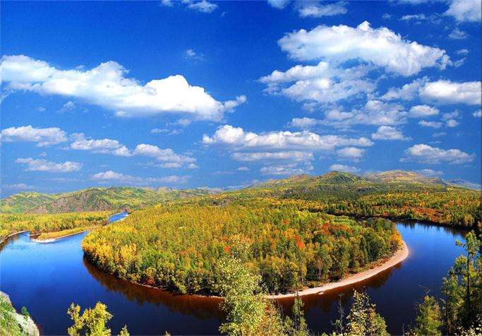

莫尔道嘎出发，一路原始森林，草原湿地过度带，途经得耳布尔，走进大山深处，感受原始鄂温克人的生活环境，观敖鲁古雅驯鹿，驯鹿被鄂温克人誉为森林之舟，传说中的四不像。中国最后一个狩猎部落，是中国唯一饲养驯鹿的少数民族，观古老的鄂温克猎民的习俗，品尝鹿奶酒，看动画中圣诞老人所“使用”的温顺的驯鹿，与驯鹿近距离接触，驯鹿性情温顺，大家可以摸一下它可爱的小脸，继续前行到达根河，根河是中国的冷极点，入住宾馆，稍做休息，下午前往木屋度假村，依山傍水，景色秀丽，山间松桦相间，清澈透明的龙泉河蜿蜒曲回，山花掩映的林荫小路曲径通幽，木屋度假村建筑均采取纯木结构，其造型别致，古朴典雅，线条流畅，色彩明快，给人以返朴归真的感觉。清澈透明的龙泉河，情侣小屋，索道桥，森林小火车，给人以自然清新，返璞归真之感，这里有呼伦贝尔独具特色的野生稀有动物20余种，如狼，黑熊，野猪，狍子，野山鸡，兔子等珍禽。